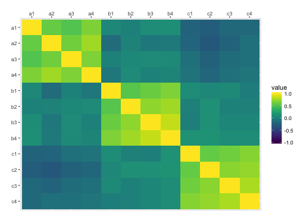
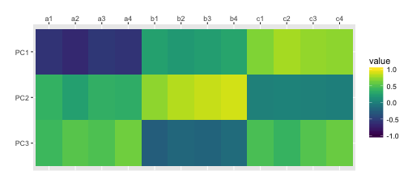
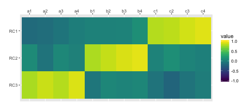
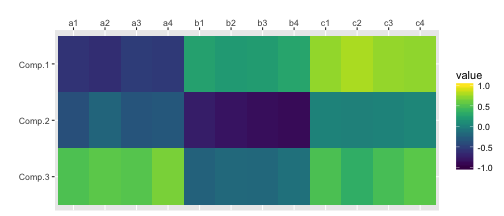
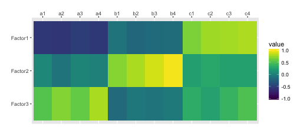
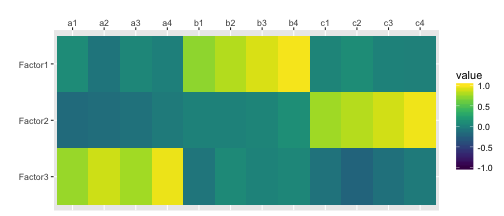
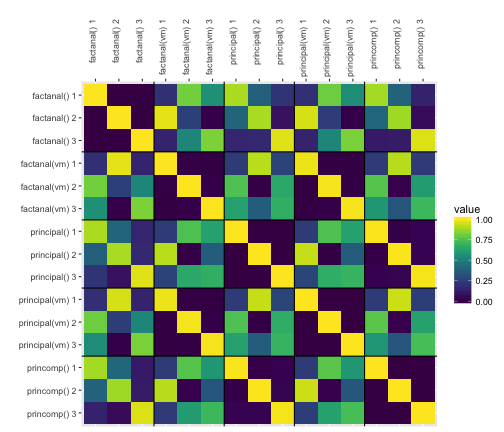

Putting together this page made me realise I still don't know anything about PCA and factor analysis.
I use the psych package for SPSS-style PCA
suppressMessages( library(tidyverse) ) suppressMessages( library(psych) ) suppressMessages( library(viridis) )
First, I'll simulate some data with an underlying structure of three factors.
set.seed(444) # for reproducibility a <- rnorm(100, 0, 1) b <- rnorm(100, 0, 1) c <- rnorm(100, 0, 1) df <- data.frame( id = seq(1,100), a1 = a + rnorm(100, 0, 1), a2 = a + rnorm(100, 0, .8), a3 = a + rnorm(100, 0, .8), a4 = a + rnorm(100, 0, .4), b1 = b + rnorm(100, 0, 1), b2 = b + rnorm(100, 0, .8), b3 = b + rnorm(100, 0, .6), b4 = b + rnorm(100, 0, .4), c1 = c + rnorm(100, 0, 1), c2 = c + rnorm(100, 0, .8), c3 = c + rnorm(100, 0, .6), c4 = c + rnorm(100, 0, .4) )
Select just the columns you want for your PCA. You can visualise their correlations with cor() and ggplot().
traits <- df %>% select(-id) traits %>% cor() %>% as.data.frame() %>% mutate(var1 = rownames(.)) %>% gather("var2", "value", a1:c4) %>% mutate(var1 = factor(var1), var1 = factor(var1, levels = rev(levels(var1)))) %>% ggplot(aes(var2, var1, fill=value)) + geom_tile() + scale_x_discrete(position = "top") + xlab("") + ylab("") + scale_fill_viridis(limits=c(-1, 1))

Determine the number of factors to extract. Here I use the SPSS-style default criterion of Eigenvalues > 1
ev <- eigen(cor(traits)); nfactors <- length(ev$values[ev$values > 1]); nfactors
## [1] 3
traits.principal <- principal(traits, nfactors=nfactors, rotate="none", scores=TRUE) traits.principal
## Principal Components Analysis ## Call: principal(r = traits, nfactors = nfactors, rotate = "none", scores = TRUE) ## Standardized loadings (pattern matrix) based upon correlation matrix ## PC1 PC2 PC3 h2 u2 com ## a1 -0.58 0.37 0.41 0.64 0.36 2.5 ## a2 -0.67 0.23 0.53 0.78 0.22 2.2 ## a3 -0.55 0.35 0.49 0.67 0.33 2.7 ## a4 -0.59 0.34 0.62 0.84 0.16 2.5 ## b1 0.24 0.71 -0.26 0.63 0.37 1.5 ## b2 0.18 0.81 -0.19 0.73 0.27 1.2 ## b3 0.22 0.86 -0.21 0.83 0.17 1.3 ## b4 0.27 0.89 -0.16 0.89 0.11 1.2 ## c1 0.67 0.00 0.47 0.67 0.33 1.8 ## c2 0.78 0.03 0.38 0.75 0.25 1.5 ## c3 0.73 0.00 0.52 0.80 0.20 1.8 ## c4 0.71 -0.01 0.60 0.86 0.14 1.9 ## ## PC1 PC2 PC3 ## SS loadings 3.71 3.12 2.25 ## Proportion Var 0.31 0.26 0.19 ## Cumulative Var 0.31 0.57 0.76 ## Proportion Explained 0.41 0.34 0.25 ## Cumulative Proportion 0.41 0.75 1.00 ## ## Mean item complexity = 1.9 ## Test of the hypothesis that 3 components are sufficient. ## ## The root mean square of the residuals (RMSR) is 0.05 ## with the empirical chi square 35.69 with prob < 0.34 ## ## Fit based upon off diagonal values = 0.98
scores.principal <- traits.principal$scores
cor(scores.principal, traits) %>% as.data.frame() %>% mutate(var1 = rownames(.)) %>% gather("var2", "value", a1:c4) %>% mutate(var1 = factor(var1), var1 = factor(var1, levels = rev(levels(var1)))) %>% ggplot(aes(var2, var1, fill=value)) + geom_tile() + scale_x_discrete(position = "top") + xlab("") + ylab("") + scale_fill_viridis(limits=c(-1, 1))

traits.varimax <- principal(traits, nfactors=nfactors, rotate="varimax", scores=TRUE) traits.varimax
## Principal Components Analysis ## Call: principal(r = traits, nfactors = nfactors, rotate = "varimax", ## scores = TRUE) ## Standardized loadings (pattern matrix) based upon correlation matrix ## RC2 RC1 RC3 h2 u2 com ## a1 0.08 -0.16 0.78 0.64 0.36 1.1 ## a2 -0.09 -0.14 0.87 0.78 0.22 1.1 ## a3 0.06 -0.08 0.81 0.67 0.33 1.0 ## a4 0.00 -0.02 0.91 0.84 0.16 1.0 ## b1 0.79 0.01 -0.07 0.63 0.37 1.0 ## b2 0.85 0.01 0.05 0.73 0.27 1.0 ## b3 0.91 0.03 0.03 0.83 0.17 1.0 ## b4 0.93 0.10 0.05 0.89 0.11 1.0 ## c1 0.03 0.81 -0.09 0.67 0.33 1.0 ## c2 0.10 0.83 -0.21 0.75 0.25 1.2 ## c3 0.03 0.89 -0.09 0.80 0.20 1.0 ## c4 -0.01 0.93 -0.03 0.86 0.14 1.0 ## ## RC2 RC1 RC3 ## SS loadings 3.09 3.06 2.93 ## Proportion Var 0.26 0.26 0.24 ## Cumulative Var 0.26 0.51 0.76 ## Proportion Explained 0.34 0.34 0.32 ## Cumulative Proportion 0.34 0.68 1.00 ## ## Mean item complexity = 1 ## Test of the hypothesis that 3 components are sufficient. ## ## The root mean square of the residuals (RMSR) is 0.05 ## with the empirical chi square 35.69 with prob < 0.34 ## ## Fit based upon off diagonal values = 0.98
scores.varimax <- traits.varimax$scores
cor(scores.varimax, traits) %>% as.data.frame() %>% mutate(var1 = rownames(.)) %>% gather("var2", "value", a1:c4) %>% mutate(var1 = factor(var1), var1 = factor(var1, levels = rev(levels(var1)))) %>% ggplot(aes(var2, var1, fill=value)) + geom_tile() + scale_x_discrete(position = "top") + xlab("") + ylab("") + scale_fill_viridis(limits=c(-1, 1))

traits.princomp <- princomp(traits) traits.princomp$loadings[,1:nfactors]
## Comp.1 Comp.2 Comp.3 ## a1 -0.3417694 -0.2369677619 0.37453610 ## a2 -0.3007220 -0.1100172887 0.34278032 ## a3 -0.2537388 -0.1789695727 0.33763540 ## a4 -0.2585093 -0.1621189197 0.40365320 ## b1 0.1454728 -0.4772694841 -0.17692575 ## b2 0.1030021 -0.4845951719 -0.12592159 ## b3 0.1050394 -0.4686783589 -0.12148569 ## b4 0.1231639 -0.4359631054 -0.07113673 ## c1 0.4470188 0.0201902273 0.39266984 ## c2 0.4243402 0.0004191484 0.24259358 ## c3 0.3582827 0.0131903073 0.30147318 ## c4 0.3087364 0.0224976515 0.30722190
scores.princomp <- traits.princomp$scores[,1:nfactors]
cor(scores.princomp, traits) %>% as.data.frame() %>% mutate(var1 = rownames(.)) %>% gather("var2", "value", a1:c4) %>% mutate(var1 = factor(var1), var1 = factor(var1, levels = rev(levels(var1)))) %>% ggplot(aes(var2, var1, fill=value)) + geom_tile() + scale_x_discrete(position = "top") + xlab("") + ylab("") + scale_fill_viridis(limits=c(-1, 1))

traits.fa <- factanal(traits, nfactors, rotation="none", scores="regression") print(traits.fa, digits=2, cutoff=0, sort=FALSE)
## ## Call: ## factanal(x = traits, factors = nfactors, scores = "regression", rotation = "none") ## ## Uniquenesses: ## a1 a2 a3 a4 b1 b2 b3 b4 c1 c2 c3 c4 ## 0.48 0.28 0.46 0.17 0.52 0.38 0.21 0.07 0.46 0.34 0.27 0.14 ## ## Loadings: ## Factor1 Factor2 Factor3 ## a1 -0.53 0.05 0.49 ## a2 -0.55 -0.10 0.64 ## a3 -0.49 0.04 0.54 ## a4 -0.53 0.01 0.74 ## b1 -0.09 0.67 -0.16 ## b2 -0.18 0.77 -0.05 ## b3 -0.16 0.87 -0.09 ## b4 -0.14 0.95 -0.05 ## c1 0.63 0.22 0.30 ## c2 0.73 0.28 0.23 ## c3 0.74 0.23 0.36 ## c4 0.77 0.23 0.46 ## ## Factor1 Factor2 Factor3 ## SS loadings 3.25 2.95 2.01 ## Proportion Var 0.27 0.25 0.17 ## Cumulative Var 0.27 0.52 0.68 ## ## Test of the hypothesis that 3 factors are sufficient. ## The chi square statistic is 33.41 on 33 degrees of freedom. ## The p-value is 0.447
scores.fa <- traits.fa$scores
cor(scores.fa, traits) %>% as.data.frame() %>% mutate(var1 = rownames(.)) %>% gather("var2", "value", a1:c4) %>% mutate(var1 = factor(var1), var1 = factor(var1, levels = rev(levels(var1)))) %>% ggplot(aes(var2, var1, fill=value)) + geom_tile() + scale_x_discrete(position = "top") + xlab("") + ylab("") + scale_fill_viridis(limits=c(-1, 1))

traits.fa.vm <- factanal(traits, nfactors, rotation="varimax", scores="regression") print(traits.fa.vm, digits=2, cutoff=0, sort=FALSE)
## ## Call: ## factanal(x = traits, factors = nfactors, scores = "regression", rotation = "varimax") ## ## Uniquenesses: ## a1 a2 a3 a4 b1 b2 b3 b4 c1 c2 c3 c4 ## 0.48 0.28 0.46 0.17 0.52 0.38 0.21 0.07 0.46 0.34 0.27 0.14 ## ## Loadings: ## Factor1 Factor2 Factor3 ## a1 0.08 -0.16 0.70 ## a2 -0.08 -0.13 0.83 ## a3 0.05 -0.10 0.72 ## a4 0.00 -0.03 0.91 ## b1 0.69 0.01 -0.07 ## b2 0.79 0.02 0.07 ## b3 0.88 0.04 0.03 ## b4 0.96 0.10 0.05 ## c1 0.04 0.73 -0.10 ## c2 0.09 0.78 -0.21 ## c3 0.02 0.85 -0.11 ## c4 0.00 0.93 -0.04 ## ## Factor1 Factor2 Factor3 ## SS loadings 2.82 2.78 2.61 ## Proportion Var 0.24 0.23 0.22 ## Cumulative Var 0.24 0.47 0.68 ## ## Test of the hypothesis that 3 factors are sufficient. ## The chi square statistic is 33.41 on 33 degrees of freedom. ## The p-value is 0.447
scores.fa.vm <- traits.fa.vm$scores
cor(scores.fa.vm, traits) %>% as.data.frame() %>% mutate(var1 = rownames(.)) %>% gather("var2", "value", a1:c4) %>% mutate(var1 = factor(var1), var1 = factor(var1, levels = rev(levels(var1)))) %>% ggplot(aes(var2, var1, fill=value)) + geom_tile() + scale_x_discrete(position = "top") + xlab("") + ylab("") + scale_fill_viridis(limits=c(-1, 1))

Here, I'll plot the absolute value of all the correlations (since the sign on factors/PCs is arbitrary).
The functions principal(rotation = "varimax") and factanal(rotation = "varimax") are nearly (but not perfectly) identical.
scores.fa <- traits.fa$scores colnames(scores.principal) <- c("principal() 1", "principal() 2", "principal() 3") colnames(scores.varimax) <- c("principal(vm) 1", "principal(vm) 2", "principal(vm) 3") colnames(scores.princomp) <- c("princomp() 1", "princomp() 2", "princomp() 3") colnames(scores.fa) <- c("factanal() 1", "factanal() 2", "factanal() 3") colnames(scores.fa.vm) <- c("factanal(vm) 1", "factanal(vm) 2", "factanal(vm) 3") cbind( scores.princomp, scores.principal, scores.fa, scores.varimax, scores.fa.vm ) %>% cor() %>% as.data.frame() %>% mutate(var1 = rownames(.)) %>% gather("var2", "value", 1:15) %>% mutate(var1 = factor(var1), var1 = factor(var1, levels = rev(levels(var1)))) %>% mutate(value = abs(value)) %>% ggplot(aes(var2, var1, fill=value)) + geom_tile() + scale_x_discrete(position = "top") + xlab("") + ylab("") + scale_fill_viridis(limits=c(0, 1)) + geom_hline(yintercept = 3.5) + geom_hline(yintercept = 6.5) + geom_hline(yintercept = 9.5) + geom_hline(yintercept = 12.5) + geom_vline(xintercept = 3.5) + geom_vline(xintercept = 6.5) + geom_vline(xintercept = 9.5) + geom_vline(xintercept = 12.5) + theme(axis.text.x=element_text(angle=90,hjust=1))
